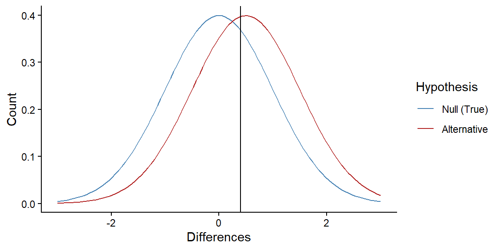

10: Power
Type I Error (p-values)
- The true distribution is centered on a difference. You sample something that suggests NO difference.
Type II Error (power)
- The true distribution is centered on zero. You sample something that suggests a difference.